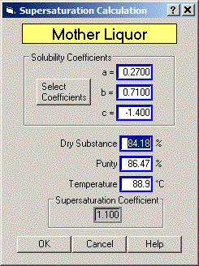
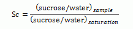

The sucrose supersaturation of a massecuite can be calculated by Sugars if the mother liquor dry substance (%), purity (%) and temperature are know for the massecuite. The solubility coefficients for the Vavrinecz solubility function are shown for reference; however, they can be changed if the massecuite being evaluated for supersaturation has coefficient values that are different than the ones shown. Supersaturation is defined by ICUMSA as the ratio of sucrose/water of the mother liquor in the massecuite to the ratio of sucrose/water of the mother liquor when it is saturated.

Dry Substance Enter a value for the dry substance (%) of the mother liquor in the massecuite. For example, Dry Substance = 86.19%.
Purity Enter a value for the purity (%) of the mother liquor in the massecuite. For example, Purity = 73.66%.
Temperature Enter a value for the temperature of the mother liquor. For example, Temperature = 81.0°C
The Supersaturation Coefficient will be calculated each time there is a change to any of the entry fields. Also, the non-sucrose/water ratio will be maintained for the mother liquor if the supersaturation is being calculated for a massecuite that is defined in the calling window (for example, from a centrifugal massecuite evaluation). That is, the non-sucrose/water ratio is the same for the mother liquor and the massecuite.